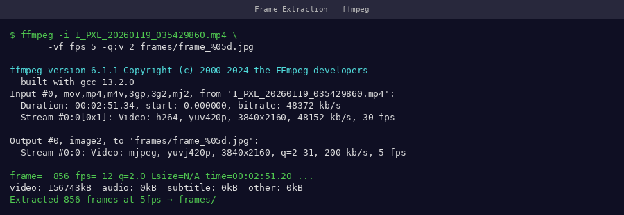
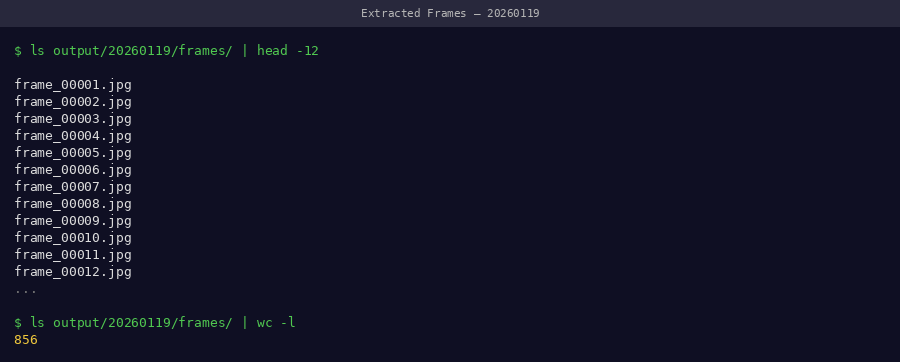
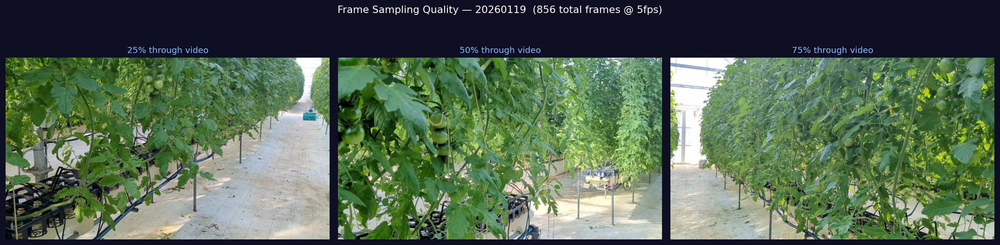
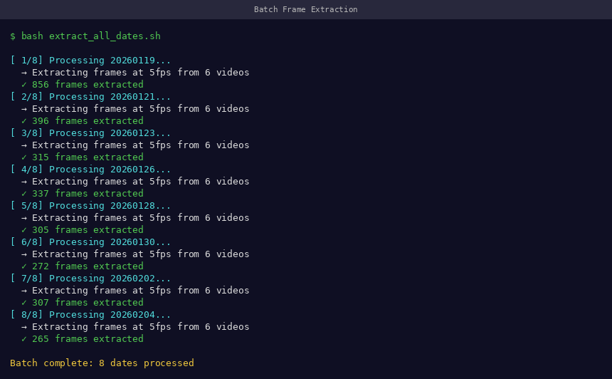

Frame Extraction¶
Convert raw MP4 videos into JPEG frames for COLMAP and 3DGS.
Overview¶
graph LR
A[📹 video.mp4<br/>4K · 60fps · ~2GB] -->|ffmpeg| B[🖼️ frame_0001.jpg<br/>through frame_0329.jpg]
B --> C[📁 ~329 frames<br/>~1.5 GB total]
style A fill:#e1f5ff
style C fill:#e1ffe1Optimal Command¶
📸 Screenshot to capture
Screenshot the full ffmpeg command running in terminal, showing progress output.

ffmpeg output during extraction — shows frame=, fps=, and time= counters updating in real timeParameter Deep Dive¶
fps=5 — Frame Rate¶
We tested extraction at 1, 3, 5, 8, and 10 fps:
| Extraction FPS | Frames | PSNR | VRAM Used | Status |
|---|---|---|---|---|
| 1 fps | ~60 | 19.2 dB | 8 GB | ❌ Too few views |
| 3 fps | ~180 | 22.1 dB | 18 GB | ⚠️ Acceptable |
| 5 fps | ~329 | 23.80 dB | 38 GB | ✅ Optimal |
| 8 fps | ~480 | 23.85 dB | 52 GB | ❌ OOM on 48GB GPU |
| 10 fps | ~600 | 23.86 dB | OOM | ❌ Not feasible |
5 fps is the sweet spot — maximum quality that fits within 48GB VRAM.
qscale:v 2 — JPEG Quality¶
Controls compression level (1 = best, 31 = worst):
| qscale | Quality | File size/frame | COLMAP result |
|---|---|---|---|
| 1 | ~98% | ~8 MB | Excellent |
| 2 | ~95% | ~5 MB | Excellent |
| 5 | ~85% | ~2 MB | Good |
| 10 | ~70% | ~1 MB | Poor |
SIFT feature detection is sensitive to compression artifacts — use qscale ≤ 2 for best COLMAP results.
frame_%04d.jpg — File Naming¶
Zero-padded 4-digit numbering ensures correct alphabetical sort order:
Do not change the naming format
COLMAP reads frames in directory order. Inconsistent naming causes wrong camera ordering and reconstruction failure.
Setting Up the Output Directory¶
Always create the output folder first:
📸 Screenshot to capture
After extraction completes, screenshot the frames folder open in a file browser showing thumbnails.

Extracted frames in file browser — thumbnails show consistent plant framing across all framesVerification¶
# Count extracted frames
ls frames/ | wc -l
# Check first and last frame names
ls frames/ | head -1
ls frames/ | tail -1
# Check total folder size
du -sh frames/
Expected output:
Pass criteria
- ✅ Frame count: 320–340 (for 60-second video at 5fps)
- ✅ First frame:
frame_0001.jpg - ✅ Folder size: 1.2–2.0 GB
- ✅ No gaps in numbering sequence
Visual Quality Check¶
Open a few frames to confirm sharpness:
# Open frame at 1/4, 1/2, 3/4 of video
eog frames/frame_0082.jpg # ~25% through
eog frames/frame_0165.jpg # ~50% through
eog frames/frame_0247.jpg # ~75% through
📸 Screenshot to capture
Open 3 frames at different points and screenshot them together — they should show the plant from consistent angles with sharp detail.

Quality spot-check: sample frames from beginning, middle, and end of video. All should be sharp with the plant fully in frame.Batch Extraction (Multiple Dates)¶
For a full time-series dataset:
#!/bin/bash
# batch_extract.sh
# Usage: bash batch_extract.sh data/
DATA_DIR="${1:-.}"
for VIDEO in "$DATA_DIR"/*/video.mp4; do
DATE_DIR=$(dirname "$VIDEO")
DATE=$(basename "$DATE_DIR")
FRAMES_DIR="$DATE_DIR/frames"
echo "Processing $DATE..."
mkdir -p "$FRAMES_DIR"
ffmpeg -i "$VIDEO" \
-vf "fps=5" \
-qscale:v 2 \
"$FRAMES_DIR/frame_%04d.jpg" \
-loglevel warning
COUNT=$(ls "$FRAMES_DIR" | wc -l)
echo " ✅ $COUNT frames → $FRAMES_DIR"
done
echo ""
echo "Batch extraction complete."
📸 Screenshot to capture
Screenshot the batch script running — it should show each date being processed with frame counts.

Batch extraction across all 22 dates — each line confirms correct frame countStorage Planning¶
| Dates | Frames/date | Total frames | Storage |
|---|---|---|---|
| 1 | 329 | 329 | 1.5 GB |
| 5 | 329 | 1,645 | 7.5 GB |
| 22 | 329 | 7,238 | 33 GB |
| 50 | 329 | 16,450 | 75 GB |